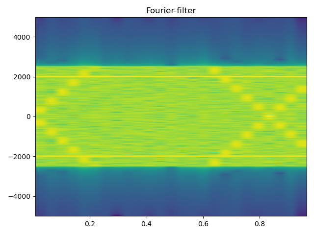
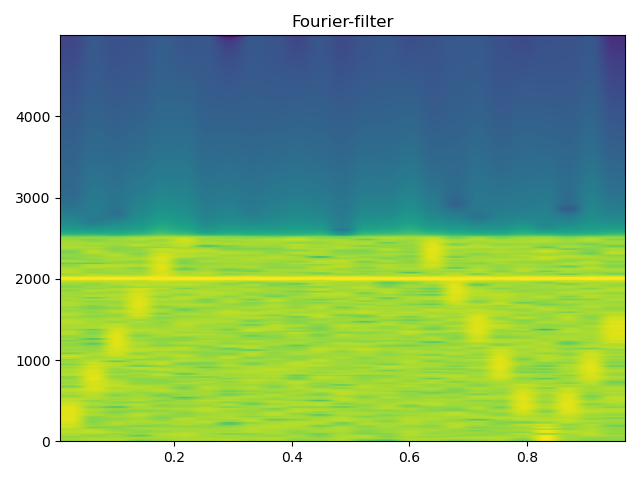

Matplotlib bugs
specgram() function bug
In python, there is also some default function for spectrogram calculation. For an example, there is matplotlib.pyplot.specgram(), which could also be called as pylab.specgram(). However, by default it sometimes gives randomly the one-sided or two-sided spectrogram without control. This could sometime cause confusing to our calculation. Such as the codes below:
1 | pylab.figure() |

We can find the resulted spectrogram as figure above, which is a two sides spectrogram frequency range within [-Fs/2, + Fs/2]. However, under other cases, the specgram() function will return one-sided spectrogram due to unknown reason. This might be a bug for the default python matlabplot module function. Then we add control option to the sides of the spectrogram as code below:
1 | pylab.figure() |

From the figure above We can find the spectrogram has displayed as one-sided normal spectrogram within [0, Fs/2]. So be care when using the spectrogram function by default. What’s more, scipy.signal.stft() function that calculation Short Time Fourier Transformation also has a similar bug. For scipy.signal.stft() function, even with controlled one-sided spectrogram option, it will still return a two-sided spectrum sometimes due to weird bugs. This bug has caused a problem with my codes for a long time and even led me to doubt the correctness of my original Fourier filter module. And I only figured out that this is not the bug of my filter but the problems with build-in python modules in a recent check.